Welcome to MATCHMAKERS! The game encodes a complex problem known as n-way matching that is used to design software systems.
To learn more about the game’s underlying purpose, visit here.
This is an element: 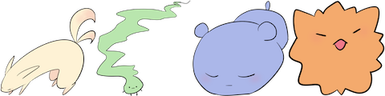.
An element is composed of several creatures. This element has a  ,
,
 ,
,  , and
, and
 .
.
,
, , and
.
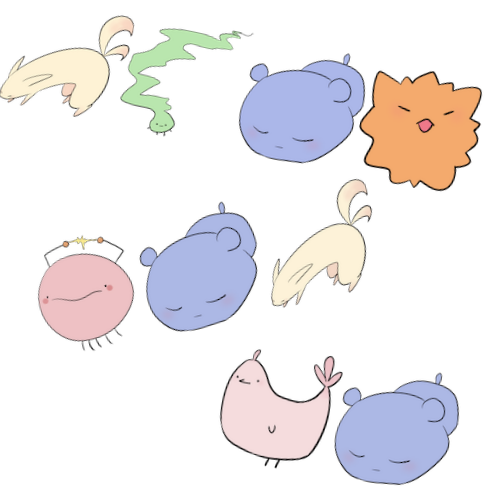
The image above depicts a family. A family is composed of several elements. This family contains elements contains , 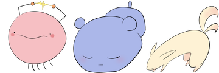, and 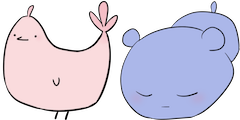.
The image above depicts a family. A family is composed of several elements. This family contains elements contains , 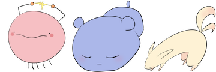, and 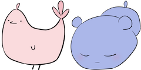.
Elements are similar if they have common creatures.
Elements and 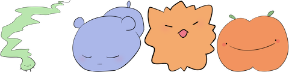 are similar because they both have, , and
.
Elements and 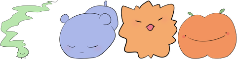 are similar because they both have
, , and
.
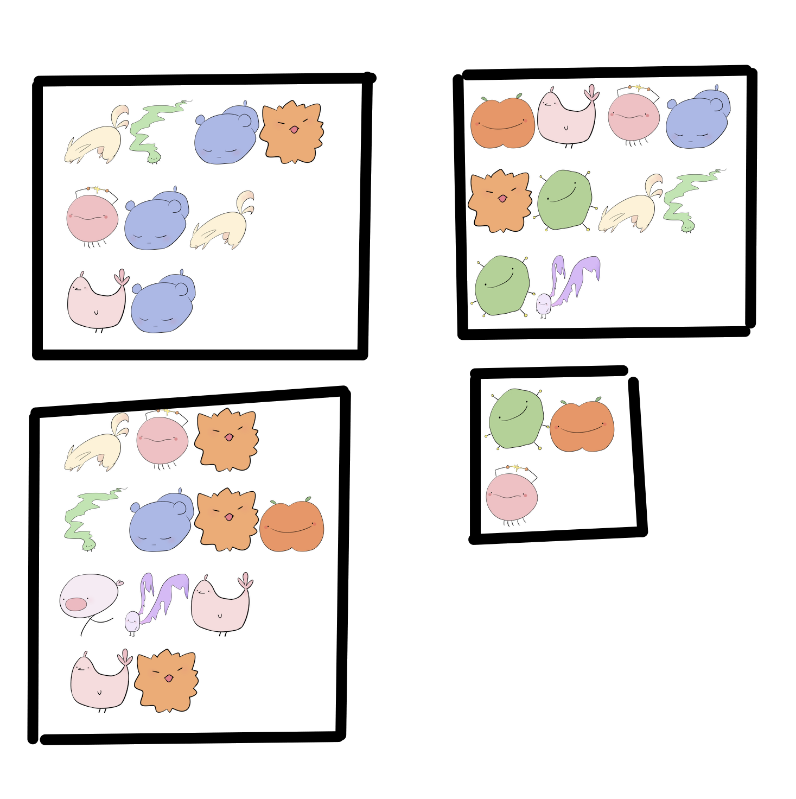
There are four families shown in the image above. Below, these families have been organized into rows. Your goal is to make the element in the first row happy, by helping it make a group of friends with elements in other families. An element is a good candidate for being a friend if it shares many common creatures with the groups of friends that you've created. Ultimately, your goal is to reach the target "Happiness" score shown on the bottom right of the screen.
There are four families shown in the image above. Below, these families have been organized into rows. Your goal is to make the element in the first row happy, by helping it make a group of friends with elements in other families. An element is a good candidate for being a friend if it shares many common creatures with the groups of friends that you've created. Ultimately, your goal is to reach the target "Happiness" score shown on the bottom right of the screen.
Scroll through elements with the blue left and right arrows keys located
on the bottom right:
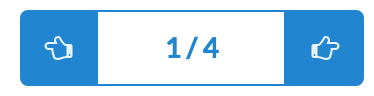
To make it easier for you to discern the elements, we've highlighted shared creatures with your groups of friends in blue.
Toggle the selection of elements by clicking on them.
Please attempt to reach the target score at the top of the screen now. [Hint]
To make it easier for you to discern the elements, we've highlighted shared creatures with your groups of friends in blue.
Toggle the selection of elements by clicking on them.
Please attempt to reach the target score at the top of the screen now. [Hint]
Add the 2nd element in row 2.
Elements will often already belong to a group of friends.
Friends are indicated by the colored bars to the right of each element, i.e. 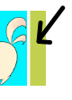.
For instance, the elements in row 2 and row 4 a friends because their bars have the same color.
Elements that already belong to a group of friends may happy with their
current friends and be disinclined to leave.
Therefore, even if these elements are highly similar to the group you are building,
your happiness score may still decrease.
An element's happiness is indicated with happiness bars i.e. 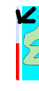, which are located to the left of every
element. Elements that have high happiness bars a disinclined to leave their group of friends.
Lookout for elements that have low happiness and are highly similar to your current group as they
have a good chance of improving your score.
Try to add elements with low happiness bars to reach the target score. [Hint]
Add the 1st element in row 3.
Add the 2nd element from row 2.
Scroll through suggested groups of friends to add to your group using the teal left and right arrows: 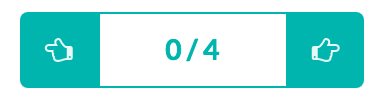.
Suggested elements are indicated with black bar to the right of the element i.e. 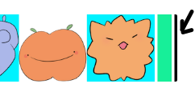.
Using the suggested elements, try to beat the target score. Try different combinations of suggested elements.
You can reorder the rows so that they are sorted based on the checked-marked elements 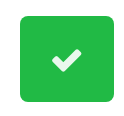.
Using this new tool, try to beat the target score once more!
You are now ready to play! Here are some effective strategies for playing the game:
- look out for highly similar elements with low happiness
- make use of the check marks to reorder the rows to find good candidates to add to your group
- make use of the suggestion bar, try different combinations of the suggested groups and combine with elements
in other groups
- allow your score to decrease. Sometimes, a good candidate can make your score decrease, but adding in other elements
i.e. suggested ones or those highly similar to it will improve your score.
Happiness:
{{ score }}/{{ target * leeway }}